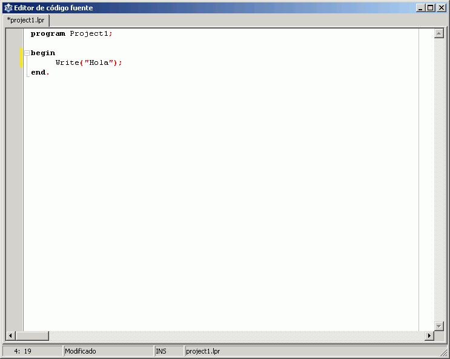

0.4. Instalación de Lazarus, para Windows
Posiblemente la mejor opción para aprender Pascal actualmente sea usar Free Pascal. Se trata de un entorno de desarrollo en Pascal gratuito (realmente más que eso, "de código abierto"), disponible para muchos sistemas operativos distintos, y que sigue la sintaxis del que fue un estándar de hecho, Turbo Pascal.
Free Pascal incluye un editor "en modo texto", al estilo de Turbo Pascal 7 para MsDos. Pero resulta más amigable usar un entorno "basado en Ventanas", como Lazarus. Este entorno permite crear también programas "de ventanas", pero es algo que no haremos hasta que lleguemos al final del curso. Por ahora nuestros programas serán "de consola" (en modo texto), para que podamos centrarnos en cómo hacer que las cosas funcionen, antes que en "hacerlas bonitas".
Podemos descargar Lazarus desde su página oficial (lazarus.freepascal.org):
La instalación debería ser poco más que hacer doble clic en el fichero descargado, y a partir de ahí ir haciendo clic en los botones que muestren el texto "Siguiente", pero aun así, vamos a ver los pasos básicos...
En primer lugar se nos preguntará el idioma que queremos usar para la instalación (las siguientes capturas corresponden a Lazarus 0.9.28, pero es esperable que no haya grandes diferencias en la instalación de versiones posteriores):
Y comenzará la instalación en sí:
Deberemos elegir una carpeta en la que instalar. Es recomendable que su nombre no contenga espacios:

Podemos afinar los detalles sobre qué instalar o no, así como si asociar el doble clic de ciertos ficheros con Lazarus. Como es habitual, en caso de duda puede ser recomendable dejar todo tal y como se nos propone..
Se creará una carpeta en el menú Inicio:
Y podemos crear un acceso también en el escritorio:
Se nos mostrará un resumen para que confirmemos los cambios que vamos a hacer:
Y comenzará la copia de ficheros...
Debería estar listo en un instante:
A partir de ese momento, podremos entrar a Lazarus desde el menú de Inicio. Cuando lo hagamos, deberemos crear un "nuevo proyecto" para nuestro programa:
Se nos propondrán varios tipos de proyectos:
Nuestro proyecto será una "aplicación de consola":
Y aparecerá un esqueleto de programa:
Pero nuestros programas serán por ahora más sencillos que eso, así que borraremos todo eso y escribiremos el nuestro:

Guardaremos el proyecto (puede ser interesante crear una carpeta llamada Pascal para todos ellos)
Y ya podemos ponerlo en marcha ("ejecutarlo"):
Obtendríamos algo como esto:
Pero es habitual que la ventana se abra y se cierre tan rápido que no tengamos tiempo de leer lo que ha aparecido en pantalla. Una solución simple es añadir al final de nuestro programa una orden "ReadLn" (que veremos con detalles más adelante), para forzar a que se haga una pausa: